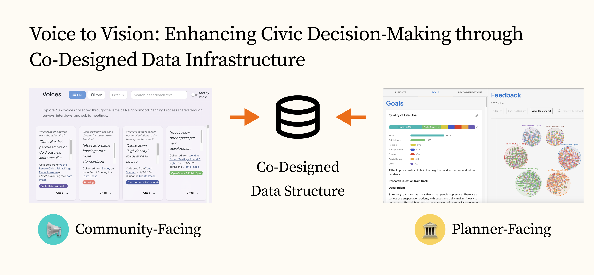
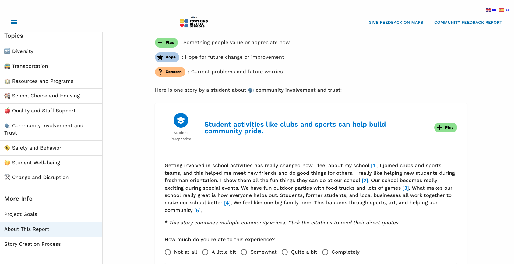
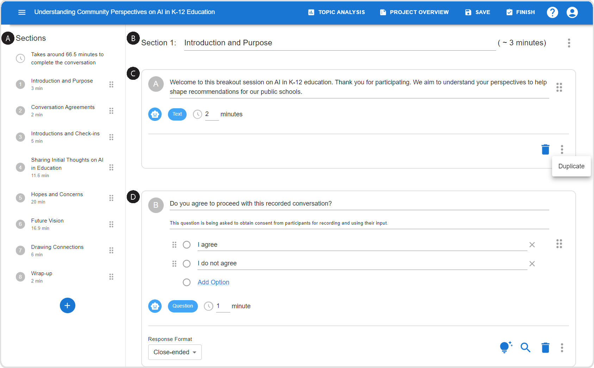
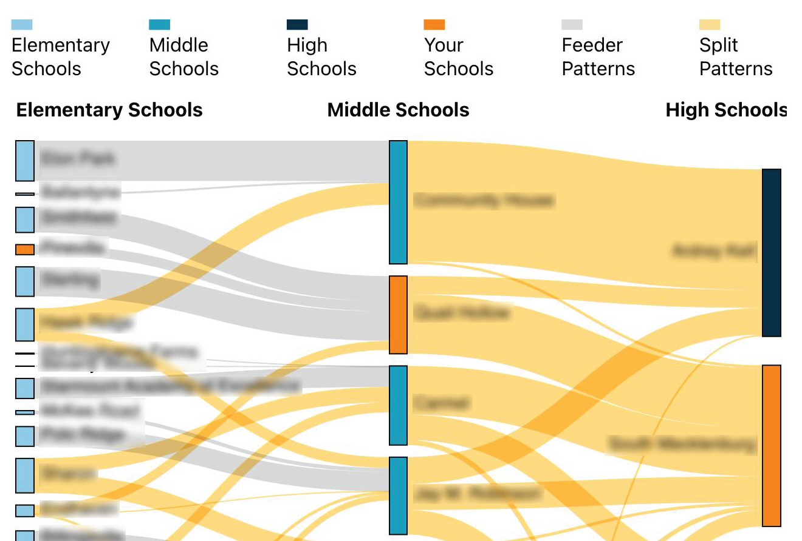

Voice to Vision: Enhancing Civic Decision-Making through
Co-Designed Data Infrastructure
As trust in community engagement and democratic
decision-making declines, there's an urgent need for increased
transparency and accountability in civic processes. For this
project, I collaborated with the New York City Department of
City Planning to co-design data infrastructure that enhances
civic decision-making. Using a research-through-design
approach with both planners and community members, we
developed an interoperable data structure and an interactive
visualization system with two key components: a
community-facing platform that clearly demonstrates how public
input informed decisions, and a planner-facing tool that
supports the complex sensemaking process of analyzing
community feedback. Voice to Vision addresses critical gaps in
current engagement processes by providing communities with
clear responses to their input while offering planners
essential support for analyzing diverse feedback. This project
contributes to the participatory design space while offering
practical tools that can help rebuild trust in civic
decision-making processes.
This is an ongoing project!

Evaluating Narrative Strategies for Constructive Community
Engagement
In contentious community issues like school redistricting,
effective communication is essential but challenging. For this
project, I'm collaborating with Winston-Salem/Forsyth County
Schools to investigate how narrative strategies can foster
understanding across diverse perspectives during their
redistricting process. I developed and evaluated 124
AI-generated, human-reviewed narrative summaries that distill
community input from over 13,000 comments, 8,300 survey
responses, and 170+ hours of audio recordings. Through a field
deployment, user studies with community members, and
controlled experiments, I'm examining how varying the balance
between concrete experiences and abstract opinions in
narratives influences readers' understanding and engagement.
This research explores how AI can help create narratives that
reflect both diverse and shared experiences within large
communities, and how narrative strategies can effectively
demonstrate that community input was meaningfully considered
in decision-making processes.
This is an ongoing project!

Coalesce: An Accessible Mixed-Initiative System for Designing
Community-Centric Questionnaires
Effective community engagement is crucial for inclusive
governance, but civic leaders often struggle to design
questions that gather meaningful input due to time constraints
and limited experience. For this project, I developed
Coalesce, a mixed-initiative system that leverages AI to help
civic leaders craft tailored and impactful questions for
surveys, interviews, and conversation guides. Drawing on
questionnaire design best practices, Coalesce improves
question readability, enhances specificity, and reduces bias.
The system was developed through interviews with 30 civic
leaders and 14 iterative feedback sessions. In real-world
evaluations with 16 participants using Coalesce for their own
community projects, we found it improved their confidence in
questionnaire design, supported diverse workflows, and
fostered learning while raising important considerations about
human agency and AI reliance. This work demonstrates how
intelligent user interfaces can help civic leaders engage more
effectively with their communities.

BoundarEase: Fostering Constructive Community Engagement to
Inform More Equitable Student Assignment Policies
School district attendance boundaries significantly impact
educational access and equity, but community engagement
processes for changing these boundaries are often polarizing
and ineffective. I collaborated with a large US school
district serving nearly 150,000 students to design
BoundarEase, a web platform that helps community members
explore and provide feedback on potential boundary changes.
Through formative interviews with 16 community members, we
identified key challenges in existing engagement processes:
individualistic thinking, lack of empathy for different
perspectives, and difficulty understanding policy impacts. The
BoundarEase platform addresses these frictions by visualizing
proposals and facilitating structured feedback based on
community preferences. Our user study with 12 participants
showed that BoundarEase encouraged people to consider impacts
beyond their own families and increased transparency around
policy proposals. This project offers both a practical tool
for school districts and insights into how technology can
reduce polarization in local educational policymaking.